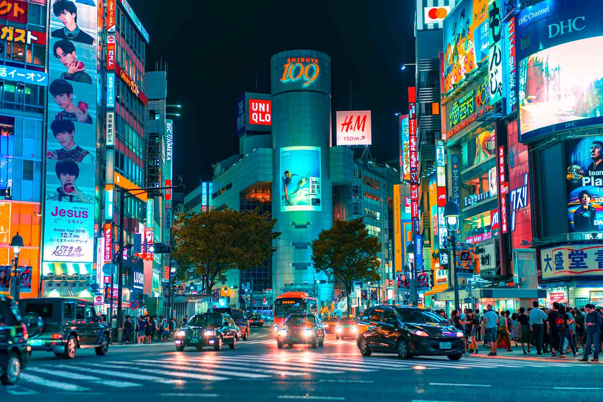

Localização
Shibuya é um dos bairros mais vibrantes e dinâmicos de Tóquio, conhecido mundialmente pelo seu icónico cruzamento, que é um dos mais movimentados do planeta. Além do frenético vai e vem de pessoas, Shibuya é um verdadeiro centro de moda e cultura jovem, repleto de lojas de roupas, cafés, restaurantes e espaços artísticos inovadores. As ruas estão sempre iluminadas por painéis de neon coloridos e letreiros eletrónicos, criando uma atmosfera urbana única que mistura modernidade e tradição.